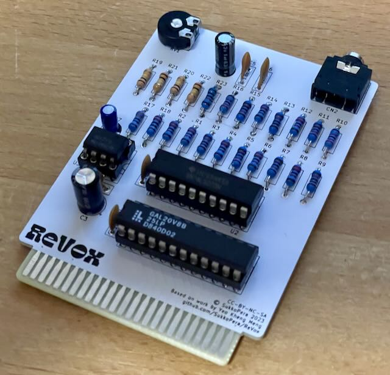

Die Platine wurde vom Originalautor getestet.
Projekt-Homepage • Interakiver Bestückungsplan

Dieses Modul erlaubt das Abspielen von Digi-Musik am Plus/4.
| Komponente | Anzahl | Preis | Anbieter |
| Platine | 1 | €1.00 | |
| 1.8nF Kondensator | 1 | €0.06 | Reichelt |
| 100nF Kondensator | 4 | €0.12 | Reichelt |
| 1µF Elektrolytkondensator | 1 | €0.14 | Reichelt |
| 10µF Elektrolytkondensator | 1 | €0.15 | Reichelt |
| 100µF Elektrolytkondensator | 1 | €0.15 | Reichelt |
| 2.2kΩ Widerstand | 1 | €0.03 | Reichelt |
| 3.3kΩ Widerstand | 1 | €0.03 | Reichelt |
| 10kΩ Widerstand | 1 | €0.02 | Reichelt |
| 100kΩ Widerstand | 4 | €0.16 | Reichelt |
| 11kΩ Widerstand 1% | 7 | €0.21 | Reichelt |
| 22kΩ Widerstand 1% | 9 | €0.27 | Reichelt |
| 10mm 500kΩ Potentiometer | 1 | €0.24 | Reichelt |
| SJ1-3525N 90° 3.5" Stereo-Klinke Buchse | 1 | €0.75 | Mouser |
| 74LS273 | 1 | €0.92 | Reichelt |
| TLC272 | 1 | €1.51 | Reichelt |
| 8-Pin Sockel, schmal | 1 | €0.21 | Reichelt |
| 20-Pin Sockel, schmal | 1 | €0.30 | Reichelt |
| 24-Pin Sockel, schmal | 1 | €0.43 | Reichelt |
| GAL20V8 | 1 | €1.70 | eBay |
| nur Platine | €1.00 | ||
| Bausatz | €8.40 |